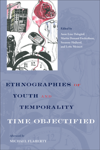

<body bgcolor="#FFFFFF" text="#000000" link="#0000FF" vlink="#CC0000" alink="#CC0000"><center><hr width="350" size="1" align="center" noshade>How time is often a troubling and external factor in the lives of youth<hr width="350" size="1" align="center" noshade><p><a href="https://cdcshoppingcart.uchicago.edu/Cart/ChicagoBook.aspx?ISBN=9781439910665&&PRESS=temple" target="_top">Buy this book!</a> | <a href="https://cdcshoppingcart.uchicago.edu/Cart/Cart.aspx?PRESS=temple" target="_top">View Cart</a> | <a href="https://cdcshoppingcart.uchicago.edu/Cart/Cart.aspx?PRESS=temple" target="_top">Check Out</a></p><p></p></center><!--none//--><h1>Ethnographies of Youth and Temporality</h1>
<H2>Time Objectified</H2>
<H2>Afterword by Michael Flaherty</H2>
<h3>edited by Anne Line Dalsg�rd, Martin Demant Frederiksen, Susanne H�jlund and Lotte Meinert</h3>
<P>cloth 1-4399-1066-9 $86.50, May 14, <FONT COLOR=#990033>Available</FONT>
<br>Electronic Book 1-4399-1068-5 $85.50 <FONT COLOR=#990033>Available</FONT>
<BR> 206 pp
6x9
</P><P>As we experience and manipulate time�be it as boredom or impatience�it becomes an object: something materialized and social, something that affects perception, or something that may motivate reconsideration and change. The editors and contributors to this important new book, <i>Ethnographies of Youth and Temporality</i>, have provided a diverse collection of ethnographic studies and theoretical explorations of youth experiencing time in a variety of contemporary socio-cultural settings.
<P>The essays in this volume focus on time as an external and often troubling factor in young people�s lives, and show how emotional unrest and violence but also creativity and hope are responses to troubling times. The chapters discuss notions of time and its �objectification� in diverse locales including the Georgian Republic, Brazil, Denmark, and Uganda.
<P>Based on long-term ethnographic fieldwork, the essays in <i>Ethnographies of Youth and Temporality</i> use youth as a prism to understand time and its subjective experience.
<BR>&nbsp;<h2>Excerpt</h2><P>Excerpt available at <a href="http://www.temple.edu/tempress">www.temple.edu/tempress</a></p>
<BR>&nbsp;<h2>Reviews</h2>
<p><i>"This collection of anthropological and sociological works presents itself as providing a unique window into the study of temporality by focusing on the category of youth�. A salient theme in all eight ethnographies is which youth can successfully alter their temporal experiences, a tension between middle-class youth and the experiences of youth from the global south. Indeed, the majority of the studies tell stories of young men and women from poor, politically fraught, and developing nations� What these ethnographies highlight so well is that time work often reflects larger inequalities.�</I> <br>&#151<b>
<i>Symbolic Interaction</b></i>
<p><i>"[A] compelling read.... The book takes us on a journey that is not only geographical but also cultural, showing us the harsh effects of this uncertainty on young people.... The book�s exploration of the strategies and tactics used to neutralize [boredom] is, in my opinion, one of its most interesting elements.... The eight chapters explore key issues, such as the relationship with the future, the crisis of the life project, uncertainty and flexibility, but also the times of marginality and the contradictory experiences of time produced by the relationship with boredom."</I> <br>&#151<b><i>Kronoscope</b></i>
<BR>&nbsp;<h2>Contents</h2><P>
<p>Introduction: Time Objectified
<br>1. Waiting for the Start: <i>Flexibility and the Question of Convergence</i> � Jennifer Johnson-Hanks
<br>2. Stunted Future: Buryong <i>among Young Men in Manila</i> � Steffen Jensen
<br>3. Aske�s Dead Time: <i>An Exploration of the Qualities of Time among Left-Radical Activists in Denmark</i> � Stine Kr�ijer
<br>4. Heterochronic Atmospheres: <i>Affect, Materiality, and Youth in Depression</i> � Martin Demant Frederiksen
<br>5. Standing Apart: <i>On Time, Affect, and Discernment in Nordeste, Brazil</I> � Anne Line Dalsg�rd
<br>6. Certificates for the Future: <i>Geographical Mobility and Educational
Trajectories among Nepalese Youth</i> � Karen Valentin
<br>7. The Normativity of Boredom: <i>Communication Media Use among Romanian Teenagers</i> � Razvan Nicolescu
<br>8. Making a Name: <i>Young Musicians in Uganda Working on the Future</i> � Lotte Meinert and Nanna Schneidermann
<br>Afterword � Michael G. Flaherty
<br>Contributors
<br>Index
</P><BR>&nbsp;<H2>About the Author(s)</H2>
<P><b>Anne Line Dalsg�rd</b> is Associate Professor of Anthropology at the Institute of Culture and Society, Aarhus University, Denmark.</P>
<P><b>Martin Demant Frederiksen</b> is Assistant Professor in the Department of Cross-Cultural and Regional Studies, University of Copenhagen, Denmark.</P>
<P><b>Susanne H�jlund</b> is Associate Professor of Anthropology in the Department of Culture and Society, Aarhus University, Denmark.</P>
<P><b>Lotte Meinert</b> is Professor of Anthropology in the Department of Culture and Society, Aarhus University, Denmark.</P>
<BR><H2>Subject Categories</H2>
<p><A HREF="/tempress/youth.html" TARGET="_top">Youth Studies</a>
<BR><A HREF="/tempress/anthropology.html" TARGET="_top">Anthropology</a>
<BR>
</p>
<BR><h2 class="inpageheading">In the series</H2>
<P><I><a href="http://www.temple.edu/tempress/gy.html" onMouseOver="window.status='Click for other books in this series!'; return true;" onMouseOut="window.status=''; return true;" target="_top">Global Youth</a></i>, edited by Craig Jeffrey and Jane Dyson.
</p><p>The <i>Global Youth Series</i>, edited by Craig Jeffrey and Jane Dyson, comprises research-based studies of young people in the context of global social, political and economic change. The series brings together work that examines youth and aspects of global change within sociology, anthropology, development studies, geography, and educational studies. Our emphasis is on youth in areas of the world that are often excluded from mainstream discussions of young people, such as Latin America, Africa, Asia and Eastern Europe, but we also welcome studies from Western Europe and North America, and books that bridge the global north and global south.</p>
<p align="center"><a href="https://cdcshoppingcart.uchicago.edu/Cart/ChicagoBook.aspx?ISBN=9781439910665&&PRESS=temple" target="_top">Buy this book!</a> | <a href="https://cdcshoppingcart.uchicago.edu/Cart/Cart.aspx?PRESS=temple" target="_top">View Cart</a> | <a href="https://cdcshoppingcart.uchicago.edu/Cart/Cart.aspx?PRESS=temple" target="_top">Check Out</a></p><p><font face="Arial" size="1"><a href="copyright.html" onMouseOver="window.status='Web Copyright Policy';return true;" onMouseOut="window.status=''" title="Web Copyright Policy">&copy;</a> 2016 <a href="http://www.temple.edu" target="new" onMouseOver="window.status='Link to Temple University home page';return true;" onMouseOut="window.status=''" title="Link to Temple University home page">Temple University</a>. All Rights Reserved. http://www.temple.edu/tempress/titles/2287_reg.html</font></p>